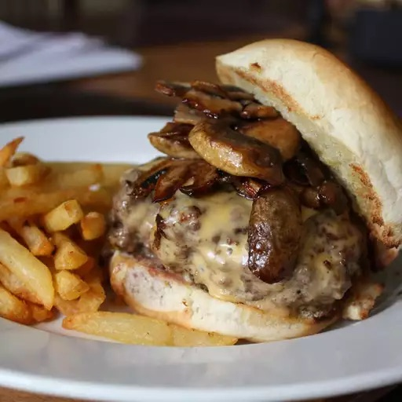

The Perfect Basic Burger

Description
These burger patties are made with ground beef and an easy bread crumb mixture.
Nothing beats a simple hamburger on a warm summer evening.
Pile these burgers with your favorite condiments and pop open a cool drink!
Ingredients
- One large egg
- Half teaspoon salt
- Half teaspoon ground black pepper
- One pound ground beef
- Half cup fine dry bread crumbs
Directions
- Step 1: Preheat an outdoor grill for high heat and lightly oil grate.
- Step 2: Whisk together egg, salt, and pepper in a medium bowl.
- Step 3: Add ground beef and bread crumbs, mix with your hands or a fork until well blended.
- Step 4: Form into four 3/4 inch thick patties.
- Step 5: Place patties on the preheated grill. Cover and cook for 6 to 8 minutes per side,
or to desired doneness. An instant-read thermometer inserted into the center should read at least 160 degrees fahrenheit.
- Step 6: Serve hot and enjoy!